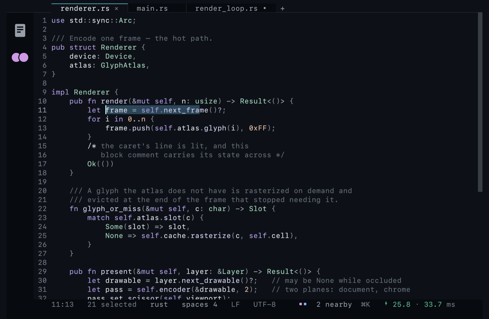
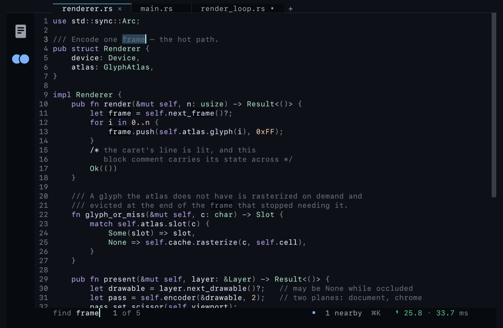
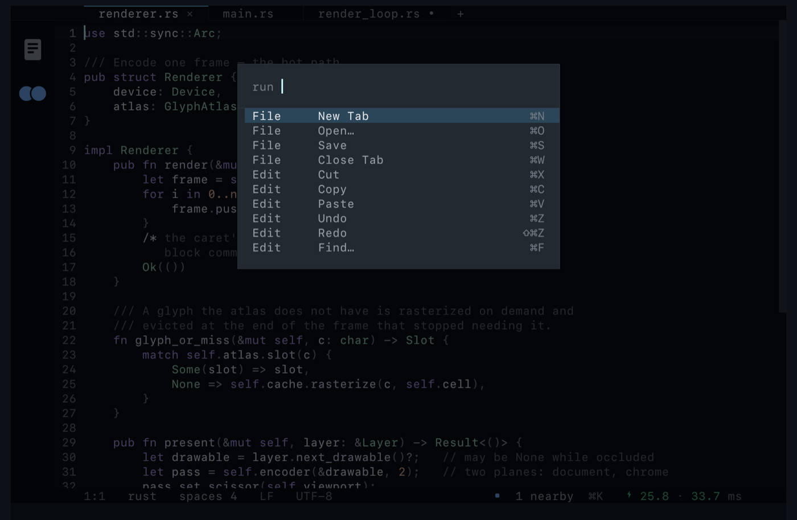
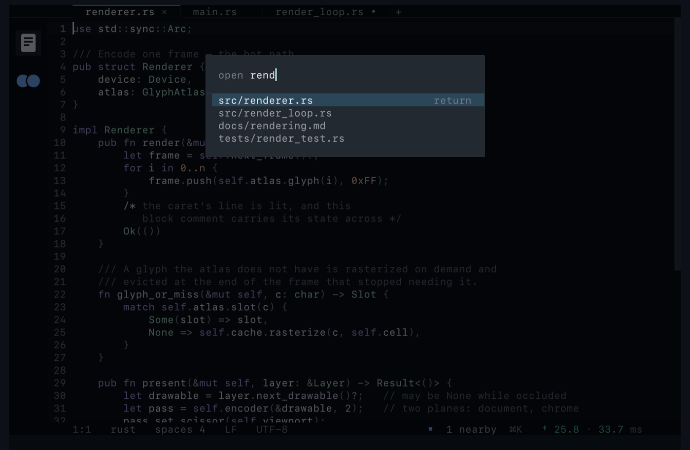
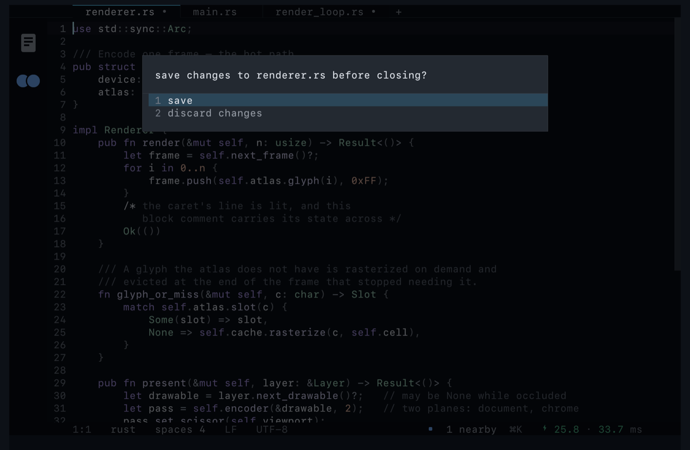
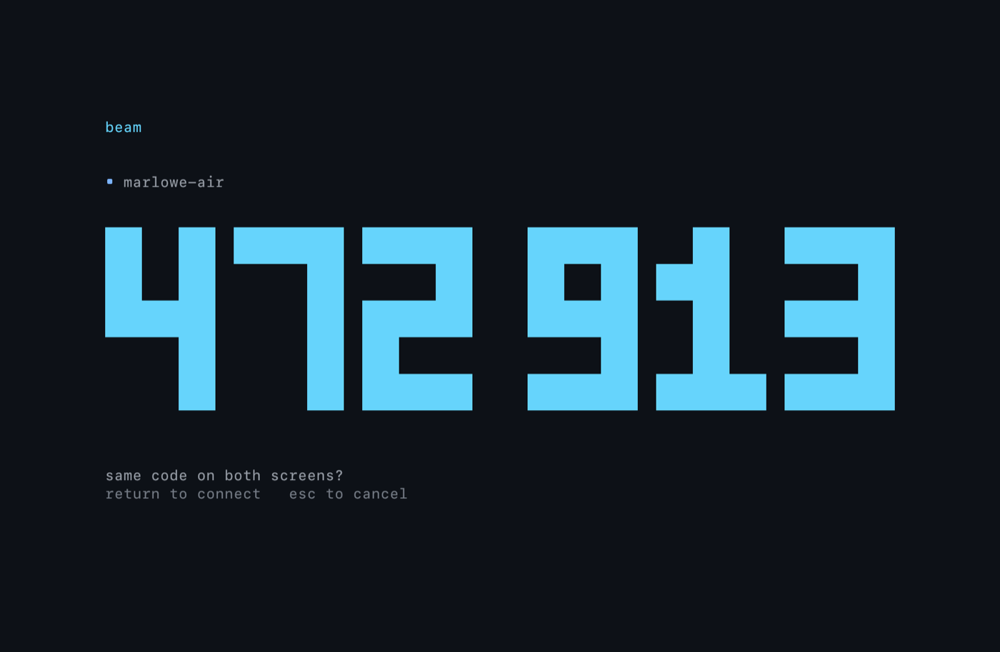
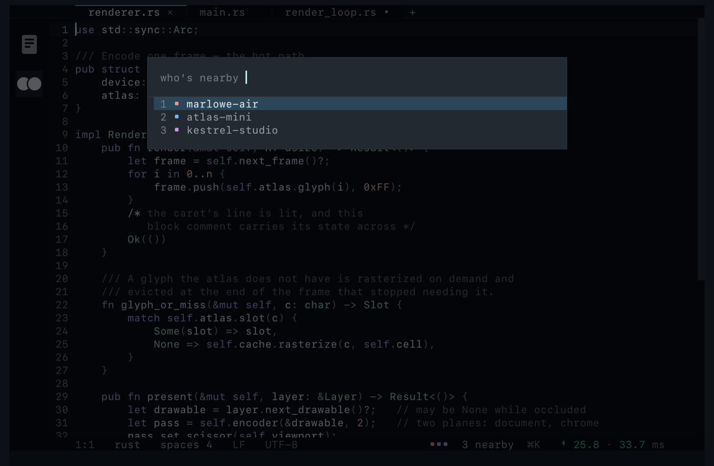

Native macOS · Swift + Metal
Beam is built benchmark-first. Every layer has a measured budget, every budget has a CI gate, and no feature is written before the benchmark that measures it has been proven to fail. The numbers below are the product — and so is the list of the ones we refuse to claim yet.

Every pixel inside the window is drawn from one glyph atlas. There is no AppKit control in there.
Measured on the development machine — an M4 MacBook Air, 60 Hz internal display —
by the benchmarks in the repository, and judged against
perf/budgets.json
by the same gate that runs in CI. Percentiles, never averages.
$ scripts/gate.sh # every bench, then the gate judges perf/results/ against perf/budgets.json $ scripts/check.sh # the fast loop: build, correctness, every surface, every screenshot — under a minute
Beam removes chrome, not capability. There is no sidebar, no toolbar, no title bar and no tab bar of its own — the document tabs sit in the band the traffic lights already occupied, so the chrome costs zero editing rows.
The query goes on the status line Beam already had. Every visible match fills, the current one is the selection — so typing over it, copying it and deleting it all work with no new keys to learn — and the count sits beside the query, because “3 of 47” is part of the answer.
Nothing is laid over the document. A find bar spends its whole existence trying to get back to that and cannot, because it is a bar.
⌘F find · ⌘G / ⇧⌘G next, previous · esc done

The system menu bar, the command palette and the keyboard are three views of a single table. A command cannot exist in one and not the others, or carry two different shortcuts. The menu bar lives outside the window, so it costs no window pixels and no draw call.
⇧⌘P command palette

A file tree pinned to an edge is chrome — it spends a quarter of the window on navigation you do a few times an hour. A fuzzy finder is not: it costs zero pixels when you are not using it, and it is drawn from the same glyph atlas as everything else, so its per-keystroke filter is budgeted and gated like any other input.
⌘O open · ⌘S save · ⌘W close tab

Closing a modified tab asks first. So does quitting. And if something else wrote the
file while you had unsaved edits — a git checkout,
a formatter, another editor — the save stops and asks, because an atomic write only
means it cannot be torn.
The first answer offered is always keep both. It is the only resolution that cannot lose anything, and a conflict is exactly the moment when you do not yet know which version you want.

Beam finds other Beams on your LAN over Bonjour and pairs in one gesture: an X25519 key agreement produces six digits on both screens, one person compares them and confirms, and the session is ChaChaPoly-encrypted from the first byte. No accounts, no certificates, no server. Nothing leaves the network — it works air-gapped.
An ephemeral key agreement is free confidentiality against a passive listener and wide open to an active machine-in-the-middle. The digits are derived from both public keys, so an attacker cannot make both screens agree — a human comparing them is the authentication. That is the same bargain as Bluetooth numeric comparison, and it is why the code is set large enough to read across a desk.
measured: gesture → digits on both screens 48.7 ms · handshake crypto 0.16 ms

Beam launches into a document, not a list of machines. Whoever is nearby appears as a coloured chip on the status line while you work, each peer's live round-trip time beside it. The six peer colours share an identical perceived lightness and differ only in hue, so they read as one set and no collaborator is louder than another.
⌘K who's nearby

A project whose entire thesis is measurement honesty does not get to be vague on its own landing page. Everything below is a real limitation of the current build.
Every push to main builds, packages
and publishes the disk image below, so the link is always the newest build.
Drag Beam onto the Applications shortcut inside it, then eject.
The build is unsigned, so the first launch needs this once. Double-clicking will be refused; right-click (or Control-click) the app and choose Open, then confirm.
Only if you want to see other Beams nearby. Decline it and the editor works exactly the same, alone.
# or build it yourself — no Xcode project, no dependencies git clone https://github.com/nuterian/beam && cd beam scripts/build.sh # release build → .build/bin scripts/package_app.sh # → dist/Beam.app and dist/Beam.dmg